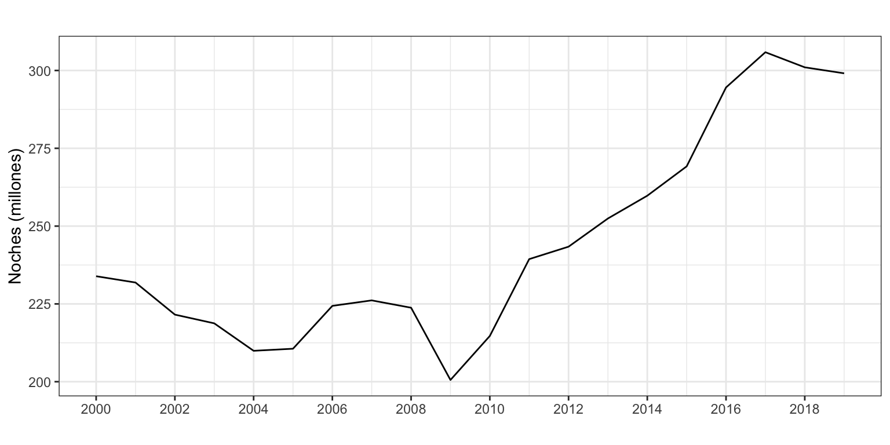
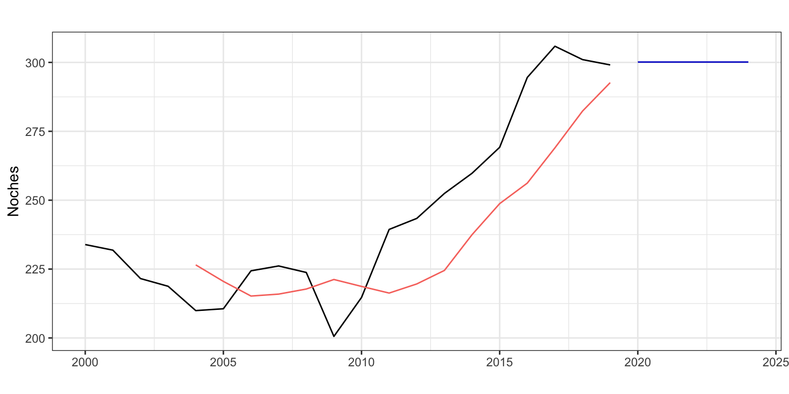

Pernoctaciones en alojamientos turísticos de turistas extranjeros
Medias móviles
1 Introducción
Consideremos de nuevo la serie temporal correspondiente al número de pernoctaciones que los turistas extranjeros realizan en España en alojamientos turísticos autorizados (que llamaremos Pernoctaciones en adelante). Esta serie está disponible en Eurostat desde enero de 2000 hasta diciembre de 2019, un total de 20 años y 240 observaciones.
La serie presenta tendencia decreciente hasta finales de la primera década del presente siglo y luego creciente hasta los dos últimos años. La estacionalidad de orden 12 esta determinada por las vacaciones de verano. El esquema es multiplicativo.
Pernoctaciones <- read.csv2("./series/Pernoctaciones.csv",
header = TRUE)
Pernoctaciones <- ts(Pernoctaciones[, 2],
start = 2000,
frequency = 12)autoplot(Pernoctaciones/1000000,
xlab = "",
ylab = "Noches (millones)",
main = "") +
scale_x_continuous(breaks= seq(2000, 2020, 2)) 
2 Predicción por el método de las medias móviles
Vamos ajustar y predecir la serie de pernoctaciones por el método de las medias móviles. Como este método asume que la serie no tiene estacionalidad, vamos a trabajar con la serie anualizada de pernoctaciones, donde cada dato será el número de pernoctaciones anuales.
Pernoctaciones <- aggregate(Pernoctaciones/1000000, FUN = sum)
autoplot(Pernoctaciones,
xlab = "",
ylab = "Noches (millones)",
main = "") +
scale_x_continuous(breaks= seq(2000, 2020, 2)) 
Dado que la serie tiene tendencia, no esperemos grandes resultados con el método de las medias móviles, ni en ajuste ni en calidad de las predicciones. Así usaremos nuestra función mmf.
mmf <- function(x, r = 3, h = 5) {
z <- NULL
z$x <- x
z$orden = r
TT <- length(x)
inicio <- start(x)
frecuencia <-frequency(x)
z$mm <- stats::filter(x, rep(1/r, r), side = 1)
z$fitted <- ts(c(NA, z$mm[-TT]), start = inicio, freq = frecuencia)
z$mean <- ts(rep(z$mm[TT], h), start = time(x)[TT] + 1/frecuencia, freq = frecuencia)
z$residuals <- x - z$fitted
class(z) <- "forecast"
z
}Veamos primero los resultados asumiendo un orden de la media móvil de 4 años (\(r = 4\)) y realizando una predicción para los próximos 5 años (h = 5). La figura 3 muestra la serie Pernoctaciones, la serie ajustada y la predicción.
mmPernoctaciones <- mmf(Pernoctaciones,
r = 4,
h = 5)
autoplot(mmPernoctaciones,
xlab = "",
ylab = "Noches",
main = "") +
autolayer(mmPernoctaciones$fitted) +
theme(legend.position="none")
Un desastre. El orden es muy elevado así que perdemos 4 observaciones al inicio, le cuesta capturar el primer cambio de tendencia –en la serie original tiene lugar en 2010 y en la serie estimada en 2013– y las predicciones no tienen en cuenta el descenso en las pernoctaciones ocurrido en los dos últimos años.
accuracy(mmPernoctaciones) ME RMSE MAE MPE MAPE MASE ACF1
Training set 12.00632 21.00165 18.40444 4.162454 7.260456 1.966314 0.5940658Así, no sorprenden los valores de los criterios de bondad de ajuste: un error porcentual de 7.3%, algo elevado y un error medio (RMSE) de 21 millones de pernoctaciones. Estos errores son superiores a los obtenidos con el método Ingenuo I y de la Deriva (RMSE = 12 millones de pernoctaciones; MAPE = 3.9%).
3 Selección del orden y predicción usando origen de predicción móvil
Vamos a mejorar nuestra primera aproximación usando el método del origen de predicción móvil para identificar el orden óptimo de la doble media móvil según que la predicción sea de 1 a 5 años.
Consideraremos órdenes desde 1 hasta 5, y asumiremos que el mínimo número de años para hacer las estimaciones es de 10
k <- 10
h <- 5
TT <- length(Pernoctaciones)
s <- TT - k - h
for (r in 1:5) {
tmpMape <- matrix(NA, s + 1, h)
for (i in 0:s) {
train.set <- subset(Pernoctaciones, start = i + 1, end = i + k)
test.set <- subset(Pernoctaciones, start = i + k + 1, end = i + k + h)
fit <- mmf(train.set, r = r, h = 5)
tmpMape[i + 1, ] <- 100*abs(test.set - fit$mean)/test.set
}
tmpMape <- colMeans(tmpMape)
cat("\nPara un orden de",
r,
"los errores son",
formatC(tmpMape, format = "f", digits = 2))
}
Para un orden de 1 los errores son 4.74 9.59 13.23 16.25 18.58
Para un orden de 2 los errores son 5.83 10.69 14.27 17.27 19.54
Para un orden de 3 los errores son 7.06 11.57 15.10 18.05 20.28
Para un orden de 4 los errores son 8.09 12.28 15.76 18.67 20.91
Para un orden de 5 los errores son 8.67 13.05 16.48 19.38 21.63Con independencia del horizonte temporal de predicción considerado, el error se hace mínimo para un orden de las medias móviles de 1, ¡el método Ingenuo I!. Además, el error para las predicciones extra-muestrales es solo aceptable a un año vista.